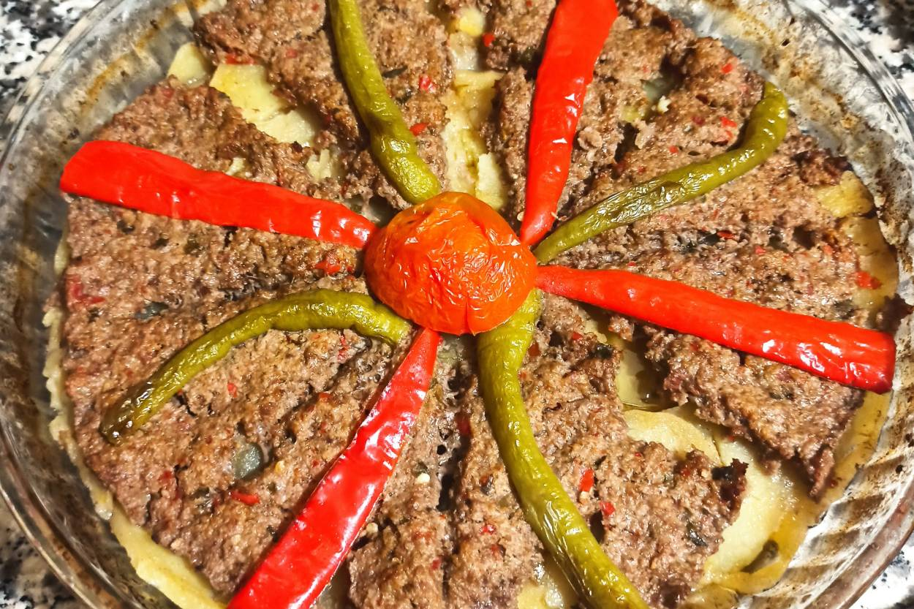

Kilis Tava is an amazing looking Turkish food which is a heavy dish and not recommended for everyone.
Kilis Tava is known for its amazing taste and heavy ingredients. You can find this everywhere in Turkey. But some people may not heard of it. Everybody should taste it when they get a chance./p>